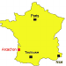
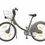

Séquence 3 Les objets techniques, quelles sont les différentes solutions pour répondre à des besoins identiques ?
Objectifs et/ou compétences
-
-
Situation déclenchante
La ville d'Arcachon souhaite mettre à disposition des vélos en libre service.
La ville veut concevoir son propre vélo.
La ville veut concevoir son propre vélo.




Problématique : Quelle est la transmission la plus robuste pour le vélo en libre-service d’Arcachon ?
- Question 1 : Qu’est-ce qu’une transmission ?
- Question 2 : Quelles sont les différentes transmissions existantes ?
Activité :
Activité 1 :
Activité 2 :
Bordeaux, Lille, Marseille, Paris, Nice, La Rochelle, Lyon.
Activité 3 :
RESSOURCES :
Structuration des connaissances :
Structuration 1 :
Structuration 2 :